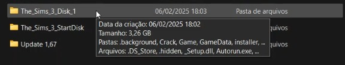
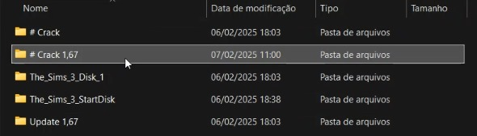
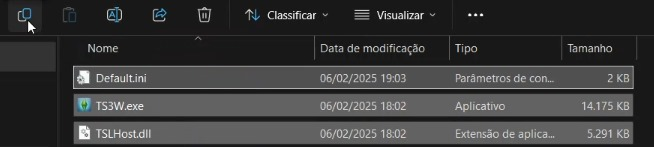
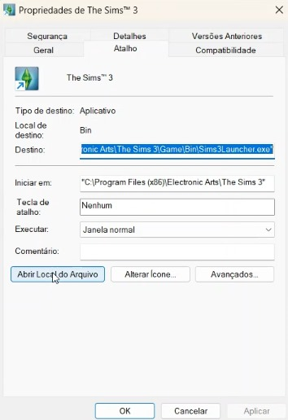
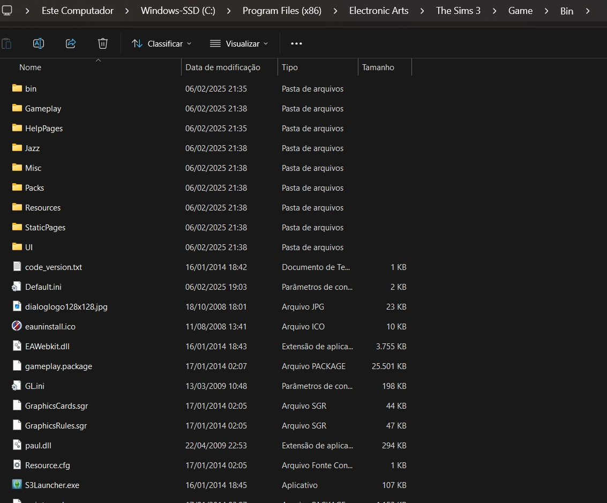

Como Instalar Meu The Sims 3
Siga o passo a passo abaixo para instalar o jogo corretamente!
Siga o passo a passo abaixo para instalar o jogo corretamente!
Siga as instruções abaixo para instalar o jogo com sucesso. Não se preocupe, é simples e rápido!
Primeiramente, baixe o arquivo MeuTheSims3.rar clicando no botão abaixo.
Após o download, você precisará extrair o arquivo MeuTheSims3.rar. Use um programa como WinRAR ou 7-Zip para fazer isso.
Após extrair o arquivo, dentro da pasta você verá a pasta chamada MeuTheSims3 e dentro dela, uma pasta chamada The Sims 3 Installer.
Acesse a pasta The Sims 3 Installer e abra a pasta The Sims 3 Start Disk.
Na pasta The Sims 3 Start Disk, localize o arquivo Sims3Setup.exe e clique duas vezes para iniciar o processo de instalação.
Durante o processo de instalação, o instalador solicitará um serial. Não se preocupe, ele está disponível dentro da pasta Crack no arquivo que você extraiu.
Dentro da pasta Crack, localize o arquivo de serial Serial.exe, abra-o e copie o serial. Em seguida, cole no campo solicitado pelo instalador.
Só selecionar a pasta The Sims 3 Disk 1 que está dentro do arquivo extraído e localize o arquivo.
Se desejar atualizar o jogo para a versão 1.67, vá até a pasta Update que está dentro do arquivo extraído e localize o arquivo Instalar1.67.exe.
Execute o arquivo Instalar1.67.exe e siga as instruções na tela para atualizar o jogo.
Após a instalação, o jogo estará quase pronto para jogar! Porém, você precisará copiar os arquivos crackeados para a pasta de instalação do jogo.
Vá até a pasta Crack, copie os 3 arquivos e cole na pasta onde o jogo foi instalado. Isso substituirá os arquivos originais e garantirá que o jogo funcione corretamente.
Por fim, clique no ícone do jogo gerado no seu desktop e jogue!
   